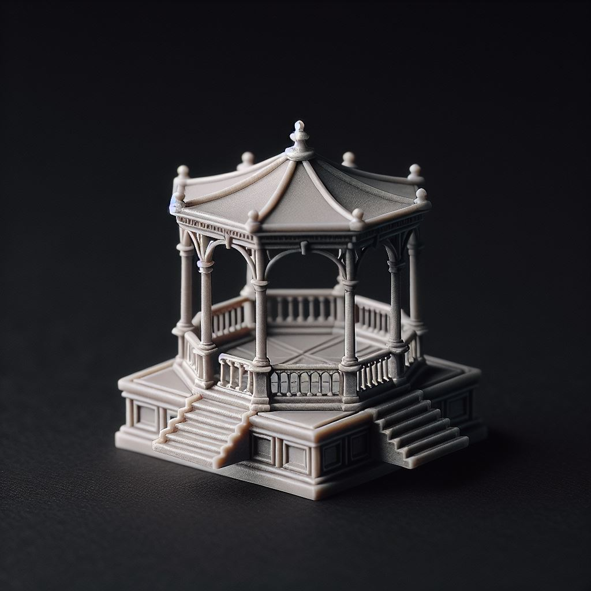
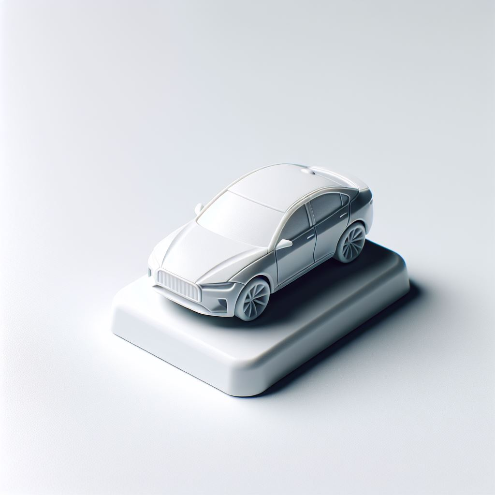
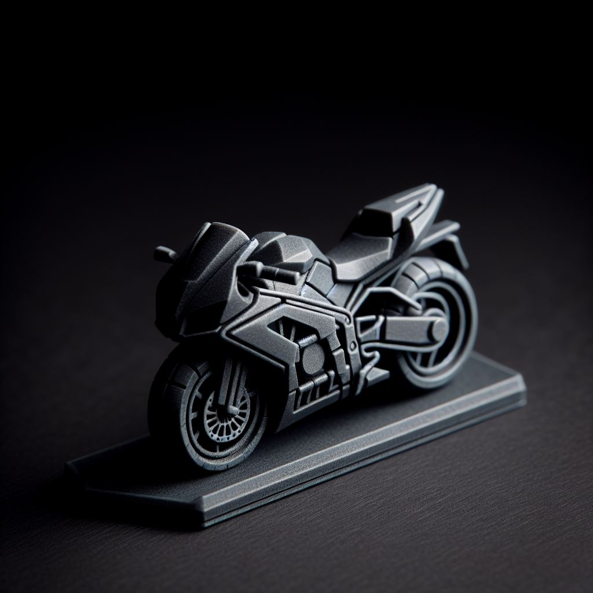
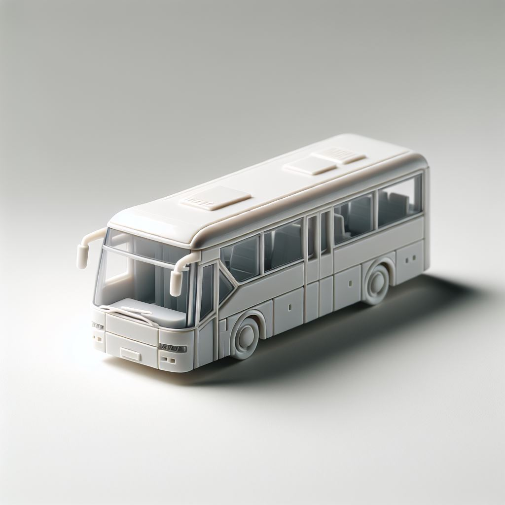
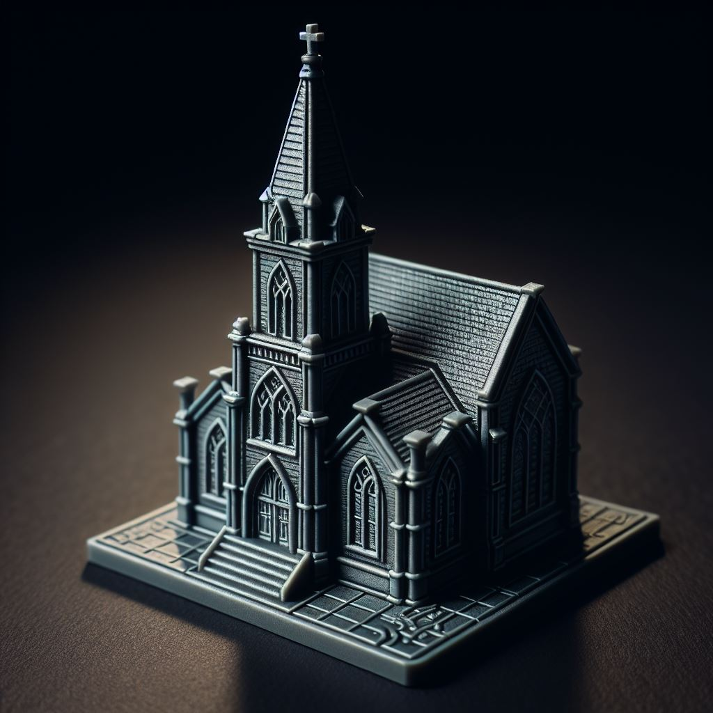

-
Prefeitura
Rei
A prefeitura, que administra a cidade, é equivalente ao Rei no xadrez. Assim como o Rei, que tem movimentação limitada, mas é vital para o jogo, a prefeitura tem uma função central nas decisões sobre a cidade e sua infraestrutura, sendo o eixo principal das políticas de mobilidade urbana.

-
Coreto
Rainha
O coreto da praça representa a Rainha no tabuleiro. Sendo o ponto central de convivência social, o coreto reflete a versatilidade da Rainha, que se movimenta livremente em todas as direções. Ele é um local de convergência, onde diferentes rotas e atividades sociais se encontram.

-
Carros
Peões
No contexto urbano, os carros representam os peões. Assim como os peões no xadrez, os carros são numerosos e dominam as ruas das cidades. Sua movimentação é limitada, refletindo a lentidão e dificuldade de manobra, especialmente em áreas congestionadas.

-
Motocicletas
Cavalos
As motocicletas são comparadas aos cavalos no xadrez, pois têm uma movimentação ágil e flexível. Assim como os cavalos se movem em “L” no tabuleiro, as motos podem manobrar rapidamente no trânsito, acessando espaços onde outros veículos não conseguem passar.

-
Ônibus
Torres
Os ônibus correspondem às torres, pois ambos percorrem grandes distâncias em linhas retas. Assim como as torres no xadrez, que têm uma trajetória definida, os ônibus seguem rotas fixas e são fundamentais para o transporte público urbano, conectando diferentes partes da cidade.

-
Igrejas
Bispos
As igrejas são representadas pelos bispos, que se movem em diagonais no tabuleiro. Assim como os bispos conectam áreas distantes no xadrez, as igrejas atuam como pontos centrais de referência e influência cultural em bairros e regiões, simbolizando a interligação de espaços.
